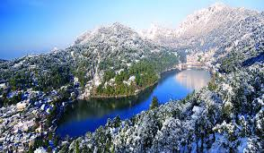
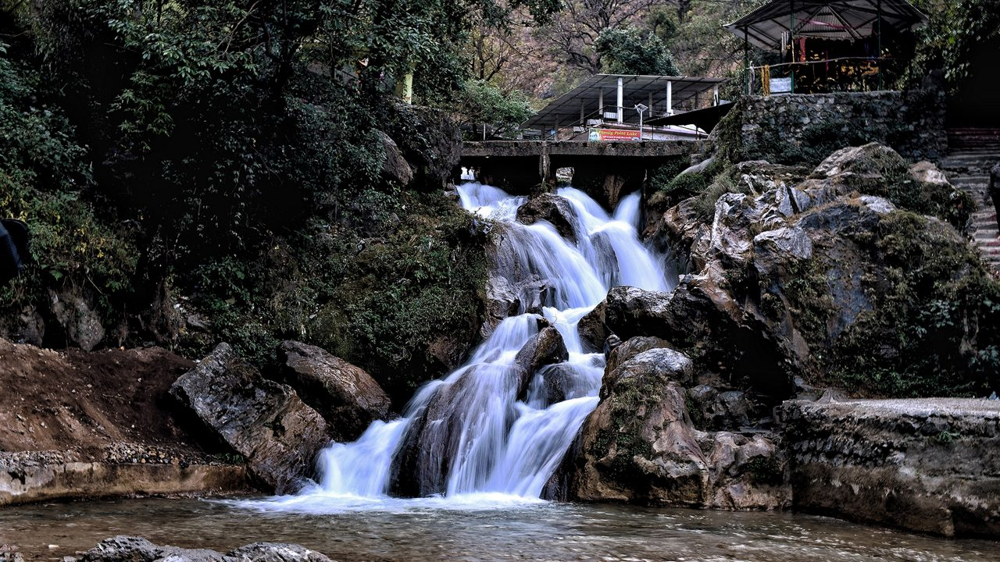
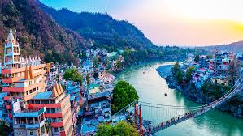
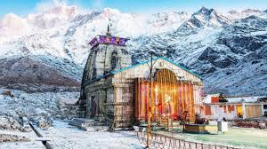

Uttarakhand
Nainital

Nainital, the "Lake District of India", is famous for its beautiful Naini Lake,
snow-capped peaks, and serene atmosphere.
- ⏰ Best Time: March – June, October – December
- 💰 Budget: ₹6,000 – ₹10,000 (3 days)
- 👨💼 Guide: Local guides available
- 🌤️ Weather: Pleasant summers, cold winters
- 📍 Location: Kumaon region, Uttarakhand
Mussoorie

Known as the "Queen of Hills", Mussoorie is a popular hill station
with attractions like Kempty Falls, Gun Hill, and Mall Road.
- ⏰ Best Time: March – June, September – November
- 💰 Budget: ₹5,000 – ₹9,000 (3 days)
- 👨💼 Guide: Available for local sightseeing
- 🌤️ Weather: Pleasant summers, snowy winters
- 📍 Location: Garhwal region, Uttarakhand
Rishikesh

Rishikesh, the "Yoga Capital of the World", is known for yoga centers,
Ganga Aarti, adventure sports like rafting, and suspension bridges.
- ⏰ Best Time: September – November, February – April
- 💰 Budget: ₹4,000 – ₹8,000 (2–3 days)
- 👨💼 Guide: Spiritual & adventure guides available
- 🌤️ Weather: Pleasant winters, hot summers
- 📍 Location: Dehradun district, Uttarakhand
Kedarnath

Kedarnath is a sacred pilgrimage site, home to one of the twelve Jyotirlingas,
surrounded by the majestic Himalayas.
- ⏰ Best Time: May – June, September – October
- 💰 Budget: ₹8,000 – ₹15,000 (5 days)
- 👨💼 Guide: Available for trekking & temple visits
- 🌤️ Weather: Cold climate, snow in winter
- 📍 Location: Rudraprayag district, Uttarakhand